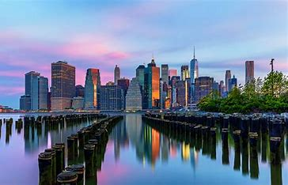
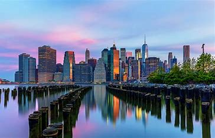

Texas

O Estado da Estrela Solitária
O Texas é o segundo maior estado dos Estados Unidos, conhecido por sua rica história, cultura única e paisagens diversificadas. Do deserto ao litoral, das grandes cidades às pequenas cidades históricas, o Texas oferece uma experiência verdadeiramente americana.
Principais Cidades
| Cidade | Principais Atrações |
|---|---|
| Houston | Centro Espacial NASA, Museum District |
| Dallas | Sixth Floor Museum, Dallas Cowboys Stadium |
| Austin | Capitol State, Cena Musical |
| San Antonio | The Alamo, River Walk |
Atrações Imperdíveis
- O histórico Alamo em San Antonio
- Space Center Houston
- Big Bend National Park
- Fort Worth Stockyards
- South Padre Island
 


Curiosidades sobre o Texas
- É o único estado que já foi uma nação independente
- Possui a segunda maior população dos EUA
- É conhecido como o "Estado da Estrela Solitária"
- Tem a maior fazenda do mundo cercada por uma única cerca
- É o maior produtor de energia eólica dos Estados Unidos
Gastronomia Texana
A culinária texana é famosa por seus churrascos, Tex-Mex e pratos típicos do sul dos Estados Unidos. O chili con carne, considerado o prato oficial do estado, e o famoso churrasco texano são apenas algumas das delícias que você pode experimentar por aqui.